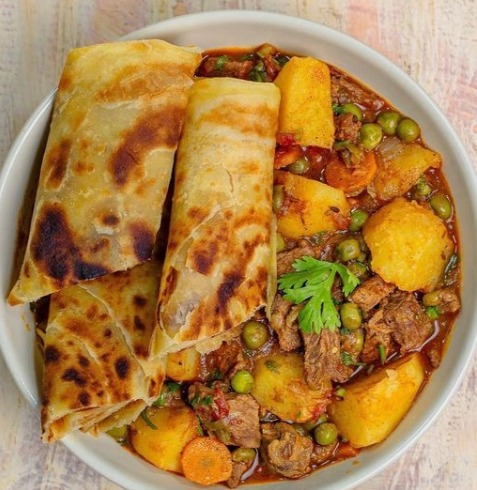
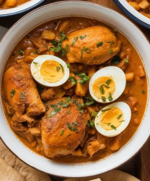

Our Signature Dishes

Nigerian Jollof Rice
Smoky, spicy tomato rice cooked to perfection. A West African classic.

Kenyan Chapati Beef Stew
Soft chapati paired with rich, slow cooked beef in a savory gravy.

Nigerian Ewedu Soup
A silky green soup made from jute leaves, perfect with swallow.

Ethiopian Doro Wat
Spiced chicken stew simmered in berbere and onions — Ethiopia's pride.
Swahili Biryani Rice
Aromatic rice layered with marinated meat, bursting with coastal spices.

Ghanaian Kontomire Ampesi
Boiled yam with creamy spinach stew and palm oil — earthy and comforting.

Kenyan Ugali Goat Fry
Hearty maize meal served with tender goat sautéed in herbs and spices.

Eritrean Beef Zigni
Spicy beef stew rich in flavor, served with injera or flatbread.